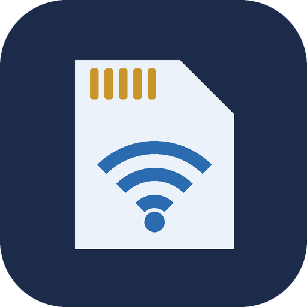
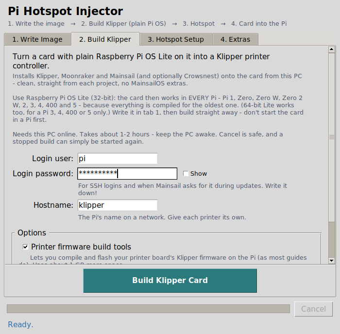
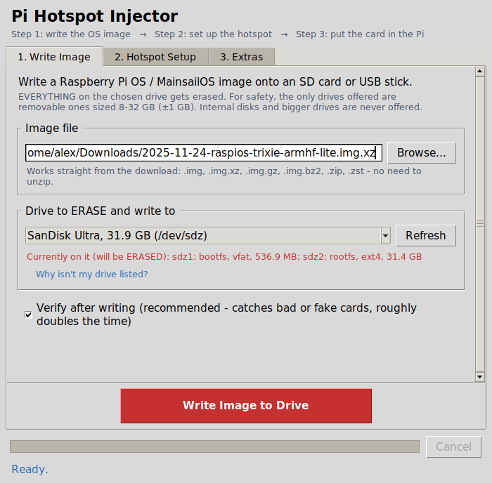
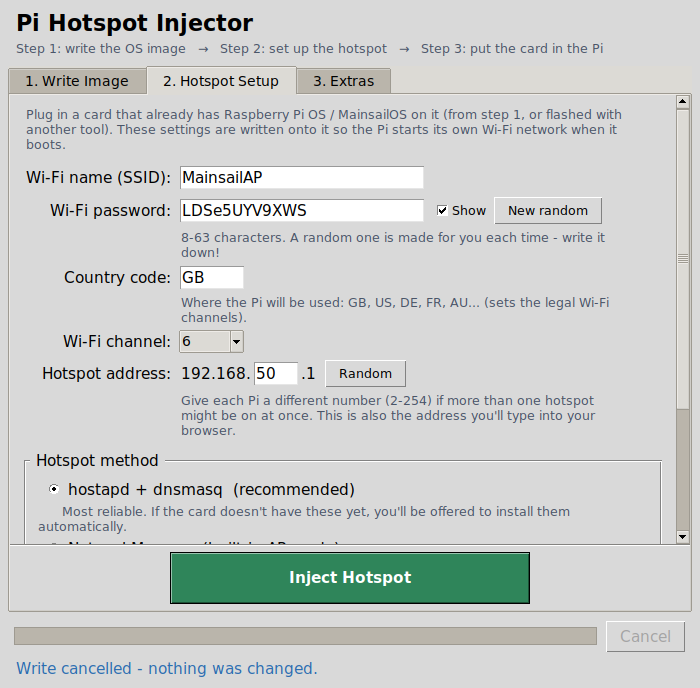
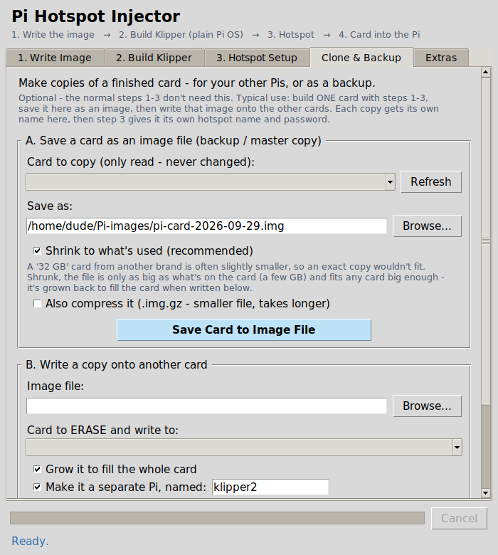
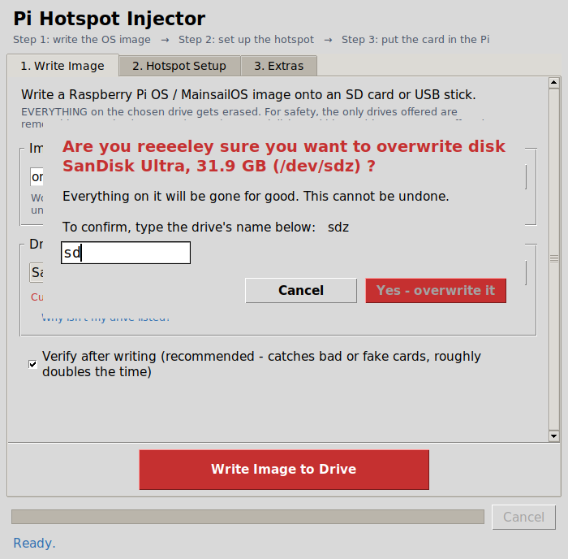

Turn a blank SD card into a Klipper 3D-printer controller that broadcasts its own Wi-Fi hotspot, from your Linux PC, with no keyboard or screen on the Pi.
Source-available · Non-commercial Linux desktop Pi 1 to Pi 5

Downloads the official Raspberry Pi OS Lite, checks it, and writes it to an 8–32 GB SD card or USB stick, with two sanity checks and read-back verification.
Installs Klipper, Moonraker, Mainsail (and Crowsnest for a webcam) onto the card, compiled so one card runs on every Pi, even the Pi Zero.
Sets the Wi-Fi name, password and address, so the Pi makes its own network on first start. Ideal for a workshop with no Wi-Fi.
Save a finished card as an image and copy it to more cards. Each copy becomes a separate Pi with its own name and keys.
10 MB checkpoints and automatic resume, so flaky Wi-Fi doesn't cost you an hour.
Only removable 8–32 GB drives are offered. Your PC's own disks can never be picked.
sudo apt install python3-tkPiInjector.desktop (choose Trust if asked), or run python3 pi_injector.py in a terminal.


